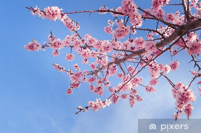
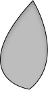

Smashing Magazine Wallpaper Challenge
Beschrijving
Smashing Magazine is een internationaal online platform voor designers en developers, bekend om zijn focus op kwaliteitsvolle, gebruiksvriendelijke en sterke visuele concepten.
Elke maand organiseert het platform een Wallpaper Challenge, waarbij designers van over de hele wereld een wallpaper ontwerpen rond een vast thema.
Ik nam deel aan deze challenge om mijn creativiteit buiten schoolopdrachten te testen en mijn werk te delen binnen een internationale designcommunity.
Doel van het project
- Werken binnen een duidelijk thema en vaste richtlijnen
- Mijn visuele en illustratieve skills verder ontwikkelen
- Mezelf uitdagen om zelfstandig een concept uit te werken
Concept
Het doel van dit project was om de stille schoonheid van de lente vast te leggen via beweging en licht.
Door te werken met individuele bloemblaadjes ontstaat een rustig, licht en minimalistisch beeld.
Mijn aanpak
Ik startte met het analyseren van het maandthema en het verzamelen van inspiratie rond sfeer, kleur en compositie.
Vervolgens werkte ik verschillende conceptideeën uit en koos ik het sterkste idee om verder te verfijnen.

Proces
Ik begon met het ontwerpen van één bloemblaadje in Figma en verfijnde het zodat het organisch oogde.
- Achtergrondblaadjes met lage opacity
- Middenlaag als focuspunt
- Voorgrond met zachte blur

Daarnaast gebruikte ik gradienten en lichtaccenten om meer diepte te creëren.
- Diepte & Blur: creëert ruimte zonder te overheersen
- Zacht kleurenpalet: subtiele gradienten
- Geen harde outlines: rustig en natuurlijk
- Flow & compositie: natuurlijke beweging
Eindresultaat
De wallpaper is zowel visueel aantrekkelijk als functioneel. Hij werkt als achtergrond zonder af te leiden van desktop-inhoud.
.png)
Reflectie
Dit project heeft me geholpen beter te begrijpen hoe diepte, licht en subtiele beweging samenwerken binnen een minimalistische compositie.
Voor een volgende versie zou ik nog meer variatie toevoegen in bloemblaadjes en lichtwerking.